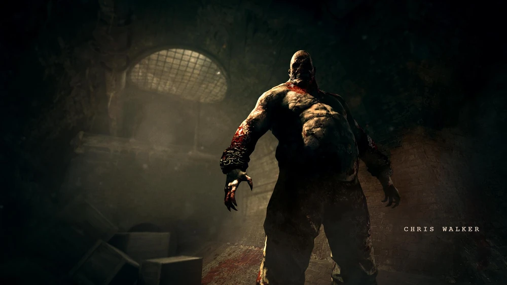
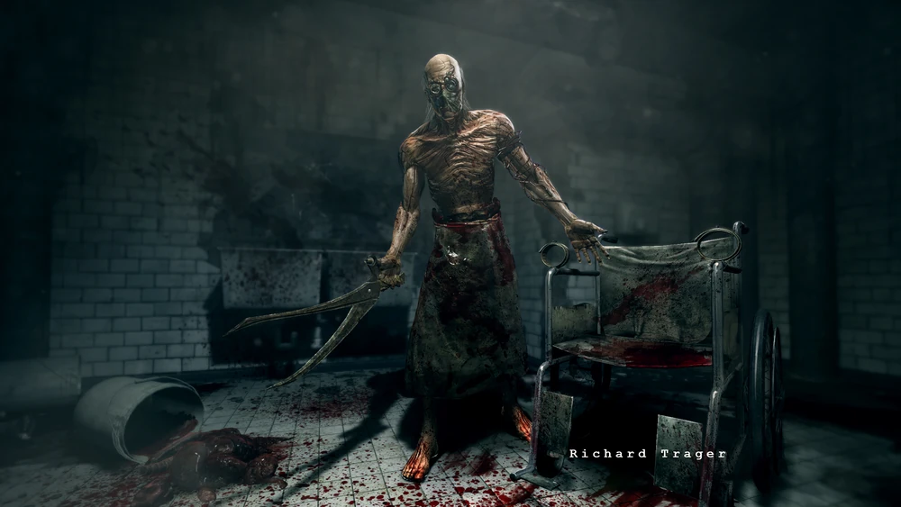
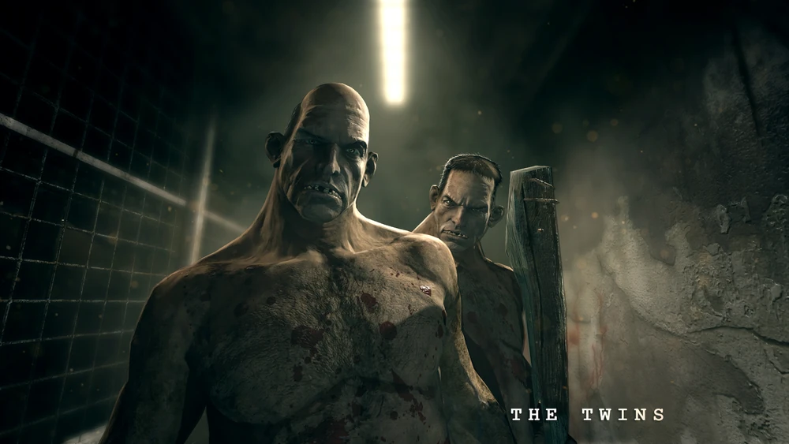
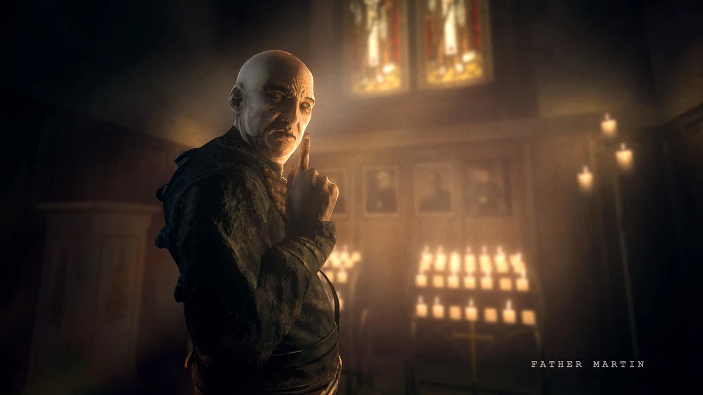
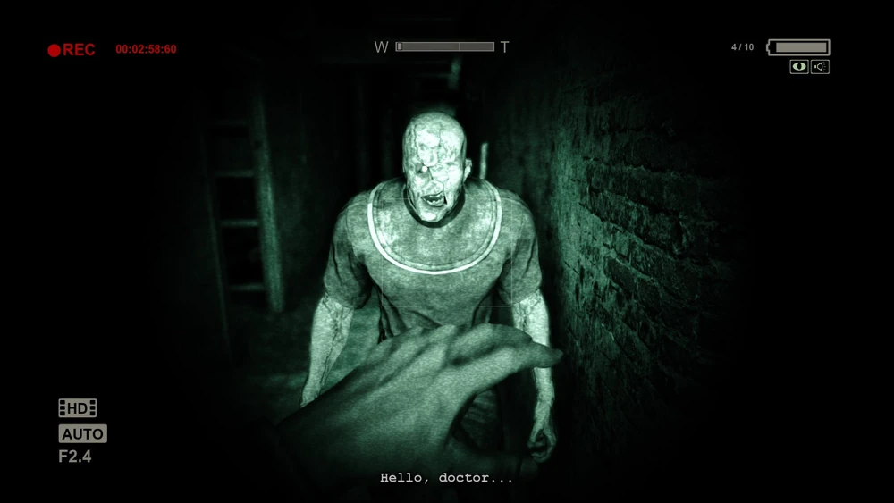
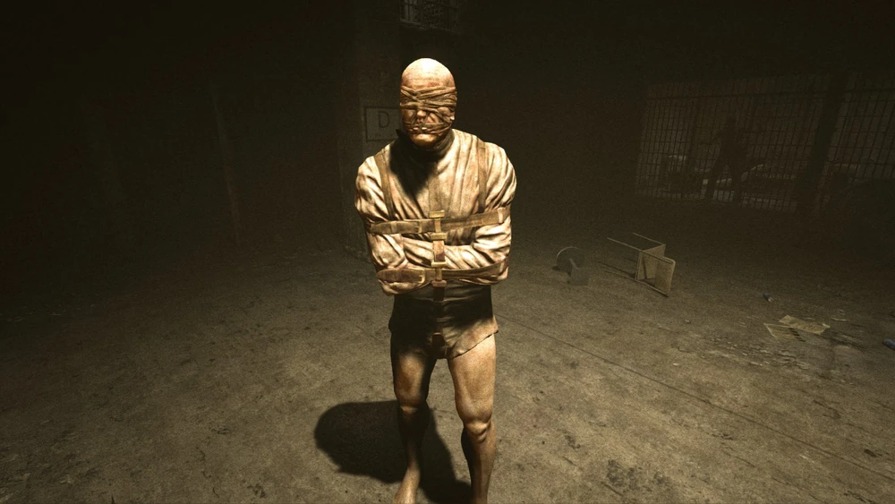
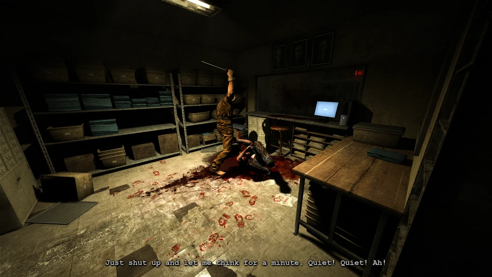
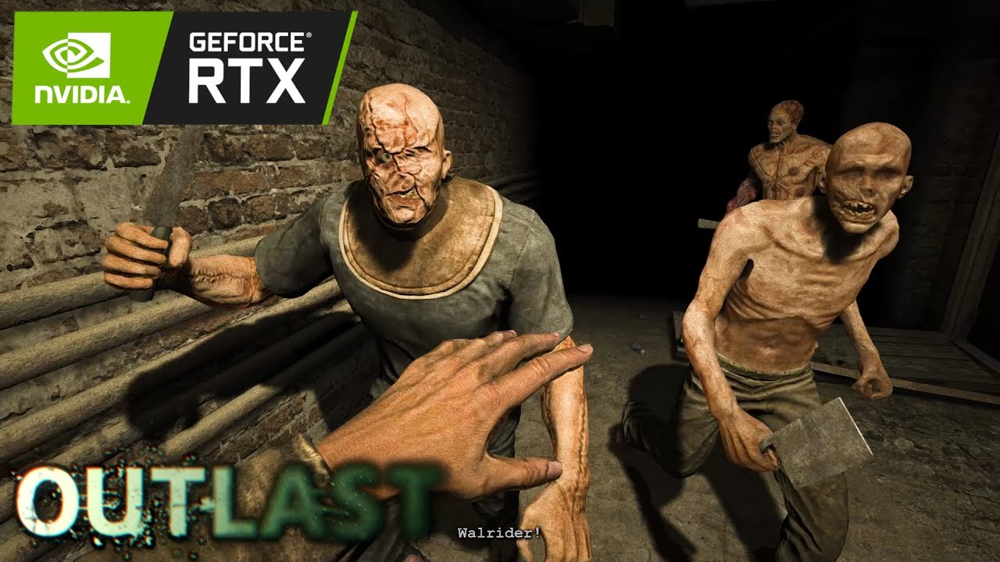
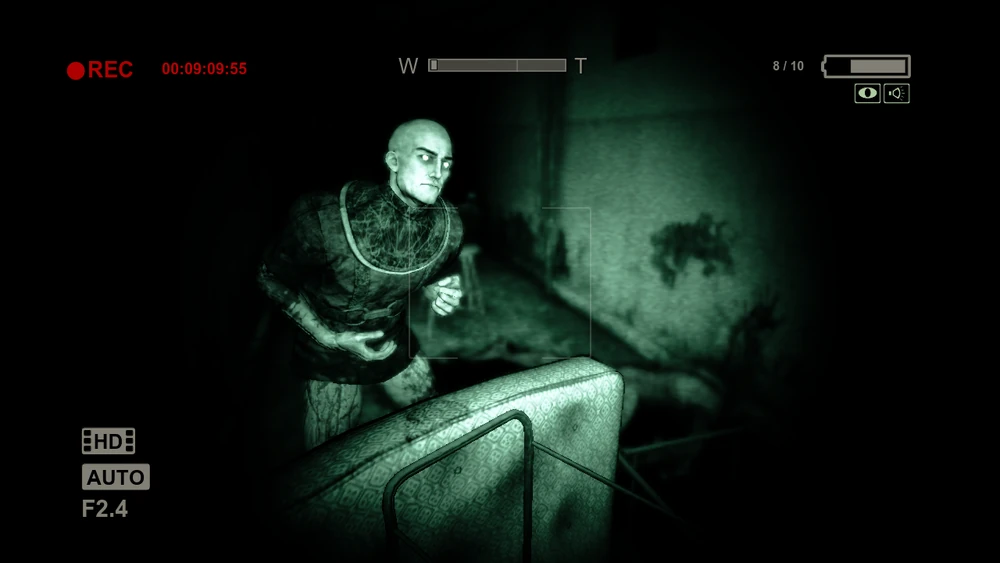

{% extends "base.htm" %}
{% block head %}
{% include "head.htm" %}
{% endblock %}
{% block content %}
Varianti jsou jedni z hlavních protivníků Outlastu. Jsou to vězni a pacienti ústavu
Mount Massive, které Murkoff Corporation využívala jako testovací subjekty v rámci
Projektu Walrider. Během incidentu v ústavu začalo mnoho z nich způsobovat chaos
a potulovat se po chodbách ústavu. Proto si je nyní představíme.
Nejdřív si je ale musíme rozdělit na podstatné a vedlejší.
Podstatní (často-se-objevující a které jen tak nezapomenete)
Chris Walker

Chris L. „Strongfat“ Walker je nejčastěji objevující se antagonista. Rozhodně
ho nepřehlédnete kvůli jeho vzhledu. Měří neuvěřitelných 207cm, byl značně
znetvořen Morfogenickým motorem a navíc si sám například rozdrtil nos a
vytrhl kůži na čele. Je celý od krve, jeho přetrhlé řetězy řinčí všude kde projde
a také je výrazně obézní. Je to bývalý voják, který sloužil v Afghánistánu a
zanechalo to na něm pořádné PTSD. Doma si vystavoval hlavy svých obětí,
v čemž pokračuje i v ústavu.
Richard Trager

Richard „Rick“ Trager je šílený Variant, který experimentuje na pacientech, aby
údajně získal více znalostí o biologii. Je vysoký, výrazně vyhublý a nenosí nic
jiného než zakrvácenou zástěru, která mu zakrývá jen přední spodní část těla.
Trager byl dřívě vedoucím rozvoje obchodu v Mount Massive Asylum a
výkonným ředitelem pro výzkumný vývoj pro Murkoff Corporation, ale po tom
co znásilnil jednu pacientku ho dali na testování a vytvořili z něho ještě větší
monstrum.
The Twins

Jsou to záhadná a psychopatická dvojčata, moc toho o nich nevíme ale v hře
se objevují čtyřikrát. Oba projevují ve srovnání s ostatními vězni v ústavu
pozoruhodný klid a inteligenci a navzdory svému šílenství si zachovávají zdání
lidskosti. Navzdory tomu jsou slepí a kompletně nazí. Jejich zbraněmi jsou
mačety a při blízkem kontaktu s nimi vám probodou břicho a následně vás
zbaví hlavy. Jelikož je zmíněno že jsou to kanibalové tak by vás nejradši snědli
ale Otec Martin jim to zakázal.
Father Martin

Martin Archimbaud se prezentuje jako velmi nábožensky založený kněz a
samozvaný prorok Walridera a stává se jedním z Milesových spojenců,
kterého považuje za svého apoštola. Je známo že se v ústavu dříve
dostavoval do kroužku malování prsty, čehož využívá aby naváděl Milesovi
cestu, kreslením nápisů a šipek krví po stěnách ústavu.
Vedlejší
Sklepní pacient

Nachází se v zatopeném sklepě ústavu, když Miles potřebuje nahodit zpět
elektrické generátory. Je to průměrně vysoký muž se znetvořenými rukami a
obličejem; jednu stranu onličeje má kompletně pokrytou zvláštní tuhou kůží.
Občas, když se mu Miles ztratí, Variant ho nonšalantně považuje za „jen
dalšího ducha“, který „se dostal do nebe“. Navíc často odmítá podivné pohyby
a zvuky jako přízraky. To naznačuje, že vídání duchů je pro tohoto pacienta
pravidelné a že trpí schizofrenií.
Pacient v kazajce

Je to neutrální variant, s nímž se poprvé setkáváme ve vězeňském bloku. Má
zavázané oči, roubík obvazy a svázaný ve svěrací kazajce, takže je
neschopný fyzického útoku, a jednoduše sleduje Milese, když se toulá po
celách. Často komentuje, jak Miles vypadá „hedvábně“, a stěžuje si na
svědění.
Podrážděný variant

Má podobný vzhled jako pacient ve sklepě; naprosto stejné poškození rukou a
obličeje. Nechová se k Milesovi nepřátelsky, pokud vstoupí do místnosti, ale
pokud se k němu přiblíží, praští ho obuškem. Když Miles aktivuje
dekontaminační komoru, stane se nepřátelským a začne ho hledat.
Pronásledovatelé z mužského oddělení

Je to skupina nepřátelských Variantů, se kterými se setkáte na začátku
mužského oddělení. První Varianta, zjevný vůdce skupiny, je sadistický řezník,
který často pronáší různé poznámky o obětech, které v minulosti mučil. Má
makabrózní smysl pro humor, jednou sarkasticky poznamenal o malém
zranění, které utrpěl po mučení oběti. Druhá Varianta, která s ním pracuje,
neustále tirádí o jeho penězích a daních. Třetí Varianta nesouvisle blábolí o
Walrideru.
Nekrofilní pacient

Ve vězeňském bloku, poté, co Miles unikne z první místnosti velkou trhlinou ve
zdi a proplazí se otvorem v podlaze, narazí na Varianta, který znásilňuje
mrtvolu. Variant je Milesovou přítomností polekán a prohlásí, že „na tohle
nebyl pozván“. Poté Milese kritizuje, protože se „rád dívá“, a prohlásí ho za
nemocného.
Ve hře je spousta dalších, kteří ale nejsou v podstatě ničím zajímaví, nejsou důležití
k příběhu, nebo se jen potloukají po chodbách ústavu.